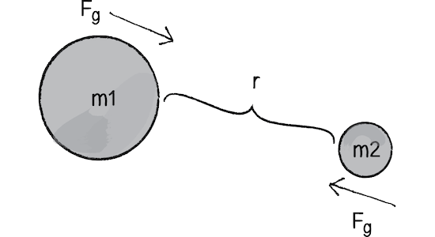

One of the most famous stories in physics is that of the apple that fell on Sir Isaac Newton's Head. It is said that getting hit prompted Newton to contemplate why things fall down, and not up. Newton postulated that between any objects with mass, there exist a force between them, called gravity. This force points in the direction of the other object's center of mass. Newton sought to quantify this relationship.
Let's say we have two small rubber balls. Newton's law would imply that there is a force between them simply because they have mass, so why don't we see them accelerating towards each other? It is very important to remember this: the force of gravity is extremely weak. There is a force acting between them, but it is negligible compared to the other forces acting on the objects, such as air resistance, friction, or the gravity from earth.
Newton found that the force of gravity increases the more massive the objects, and decreases the farther away the objects are from each other. This is why something small like a ball won't be visibly attracted to another ball, but two large objects like two stars are attracted to each other. Specifically, the force is directly proportional to the product of the two masses, and the force is inversely propotional to the square of the distance between the objects. For example, if the mass of one object doubles while the mass of the other object stays the same, the total force doubles. If both masses double, then the total force quadruples. If the distance between the objects double, the force decreases by a factor of four.
If both the masses and the distance change between the objects, simply combine their effects to find the net change in force. For example, if both masses double and the distance halves, the total force quadruples from the mass change, and quadruples again from the distance change. The net effect is that the force is 16x stronger than it was before, since 4 x 4 = 16.
However, while this explains how the force changes when we change the masses and distances between objects, it assumes that we already know the force between them in the original scenario. This is not a useful equation to have when we have two objects of known masses and distances and want to figure out the exact force between them. To find this, we simply multiply the proportionality equation from before by a constant, called "G." G is just some number that was found through years of experimentation.
G is approximately equal to 6.673 x 10^-11 (Nm^2)/(kg)^2. The reason it has such wacky units attatched are simply so that when multiplied by a mass value twice and divided by the square of a distance, the final unit will be in Newtons, the unit of force. This is clever, since we want to end up with just the force.
This interactive program illustrates Newton's Law of Gravitation. Click on the window, then press play to see the "stars" move towards each other. To adjust where each star starts off, click the middle of the star, and drag it. To adjust the size of a star, click on the black rim, and drag in or out. To give each star an initial velocity, right click the middle of the star, and drag out the velocity vector in the direction you want the star to move. The farther out you draw the vector, the greater the magnitude of the initial velocity will be.